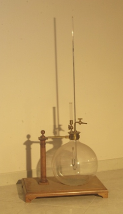

Apparecchio di Dalton per la tensione dei vapori
Scuola di provenienza: Istituto agrario "F. De Sanctis", Avellino
Settore:
Costruttori: Istituto Archimede, Roma
Materiali: Legno di noce, vetro, ottone e mercurio
Accessori: Nessuno
Stato di conservazione: Buono, consumata la guarnizione del piatto
Descrizione: La legge di Dalton, nel caso dei vapori saturi, si enuncia nel modo seguente: la tensione massima di un vapore saturo, in uno spazio che racchiude un altro vapore, chimicamente inerte col primo, è la stessa che nel vuoto. Dalton stesso ha verificato sperimentalmente questa legge mediante questo tipo di apparecchio. Il tappo in ottone del grosso recipiente di vetro è attraversato da un barometro, da un tubo terminato da una campanetta piena del liquido in esame e munito di un rubinetto e da un tubo comunicante con una pompa. Tutto l’apparecchio è posto in un bagno d’acqua, a temperatura determinata. Estraendo completamente l’aria dal recipiente, collegandolo ad una macchina pneumatica, vengono inserite poche gocce di un liquido, prevalentemente alcol, attraverso la fessura apposita. Questo vaporizzava immediatamente per la bassa pressione dell’ambiente.La tensione del vapore era misurata dall’innalzamento della colonna di mercurio del barometro. Ripetendo l’esperienza dopo aver fatto rientrare parzialmente l’aria nel pallone, la pressione del vapor saturo si trovava essere la stessa a parità di temperatura. L’unica differenza, nei due casi, è la seguente: nel vuoto la pressione del vapore assume di colpo il suo valore definitivo; in presenza dell’aria invece ciò non accade che in capo ad un certo tempo. Il Regnault, chimico e fisico francese, nei suoi lavori sulla tensione del vapor d’acqua, si è occupato di indagare fino a qual punto sia verificata la legge del Dalton, ed ha trovato che, in presenza dell’aria la tensione è un po’ più piccola che nel vuoto. Questo leggero scartamento della legge di Dalton si può del resto spiegare, secondo il Regnault stesso, col fatto che, in presenza dell’aria, prima che il vapore abbia il tempo di raggiungere la pressione corrispondente alla sua temperatura, avviene una parziale condensazione del vapore stesso sulle pareti del recipiente.